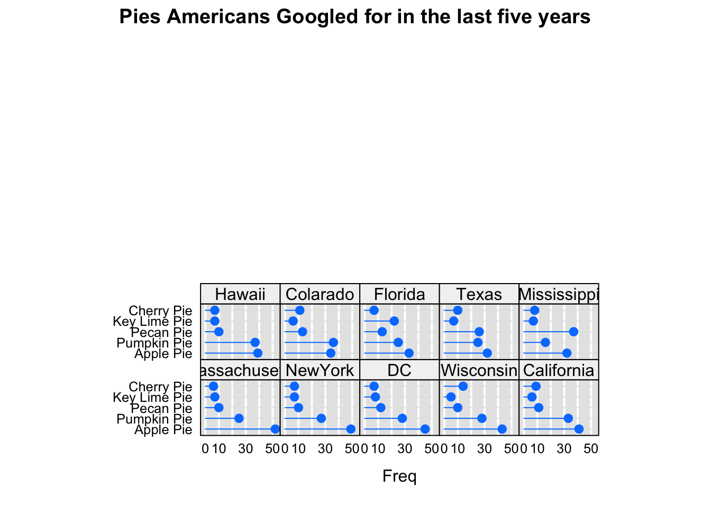
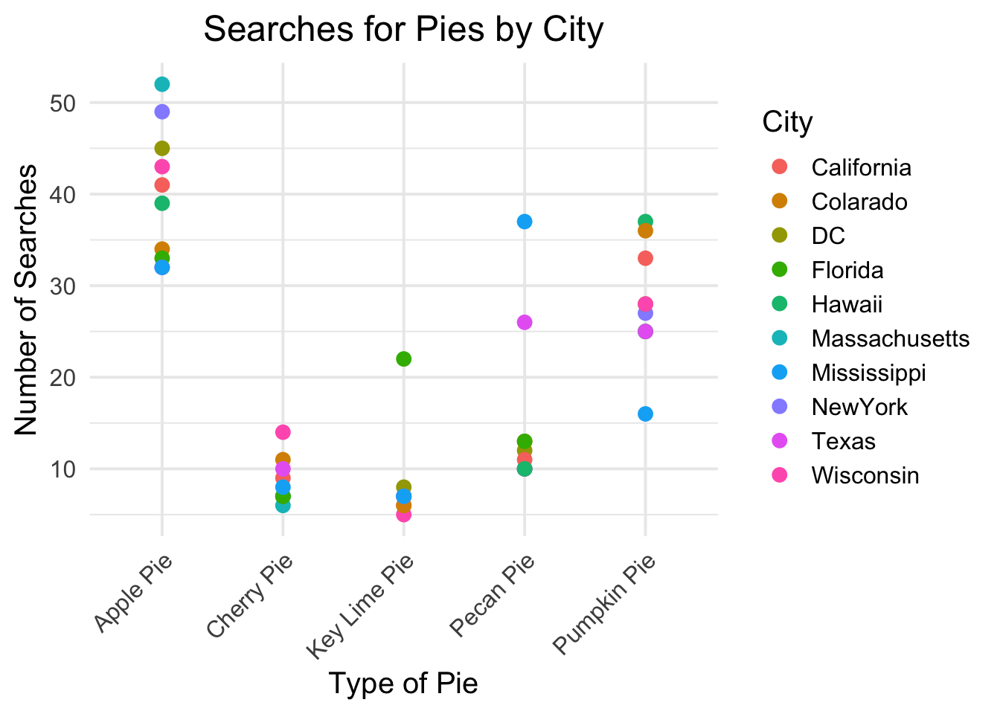

For this case Let’s Consider the below data Visualization of “Which pies Americans googled for in the last five years, in selected states ?”
Source : https://app.datawrapper.de/river/_/W0q4C
From the above Picture, the Pie charts displaying popular pie tastes from several US states as well as Washington, D.C. are displayed in the image. The majority of regions are dominated by apple pie, with Massachusetts (52%), New York (49%), and California (41%), at the top. The second most popular dessert is pumpkin pie, particularly in Texas (37%) and Hawaii (37%). Cherry, key lime, and pecan pies all have lower market shares; pecan pie is particularly well-liked in southern states like Texas (26%) and Mississippi (16%). Florida is the state that loves key lime pie the most (22%), whereas Wisconsin is the state that loves cherry pie the least (14%). Regional differences in flavor notwithstanding, apple pie continues to be the nation’s favorite pie overall.
By this we can produce better graphics or redesigning of the above data in dot plot and scatter plot.
Loading Libraries
library(lattice)library(tidyverse)
── Attaching core tidyverse packages ──────────────────────── tidyverse 2.0.0 ──
✔ dplyr 1.1.4 ✔ readr 2.1.5
✔ forcats 1.0.0 ✔ stringr 1.5.1
✔ ggplot2 3.5.1 ✔ tibble 3.2.1
✔ lubridate 1.9.3 ✔ tidyr 1.3.1
✔ purrr 1.0.2
── Conflicts ────────────────────────────────────────── tidyverse_conflicts() ──
✖ dplyr::filter() masks stats::filter()
✖ dplyr::lag() masks stats::lag()
ℹ Use the conflicted package (<http://conflicted.r-lib.org/>) to force all conflicts to become errors
type <-c("Apple Pie", "Pumpkin Pie", "Pecan Pie", "Key Lime Pie", "Cherry Pie")City <-c("Massachusetts", "NewYork","DC","Wisconsin","California","Hawaii","Colarado","Florida","Texas","Mississippi")colnames(mat) <- Cityrownames(mat) <- type mat
Massachusetts NewYork DC Wisconsin California Hawaii Colarado
Apple Pie 52 49 45 43 41 39 34
Pumpkin Pie 25 27 28 28 33 37 36
Pecan Pie 10 10 12 10 11 10 13
Key Lime Pie 7 7 8 5 6 7 6
Cherry Pie 6 7 7 14 9 7 11
Florida Texas Mississippi
Apple Pie 33 32 32
Pumpkin Pie 25 25 16
Pecan Pie 13 26 37
Key Lime Pie 22 7 7
Cherry Pie 7 10 8
It is now in matrix form where Coloumns are City Names and Rows are Type of Pies.
Dot Plot
Using lattice package, Let’s plot above data:
oneColumn =dotplot(mat, groups =FALSE,layout =c(5, 5), aspect =0.7,origin =0,type =c("p","h"),main ="Pies Americans Googled for in the last five years",scales =list(x =list(tck =0, alternating =FALSE)),panel =function(...){panel.fill(rgb(.9,.9,.9))panel.grid(h =0,v =-1,col ="white",lwd =2)panel.dotplot(col =rgb(0,.5,1),cex =1.1,...) })oneColumn

The above graph represents the given data in Dot Plot form.
Comapring the Dot plot to Pie Charts
In comparison to the pie chart, the second chart—a dot plot—provides a more accurate and thorough means of visualizing search interest in pies. Although the pie chart’s proportionate slices provide a basic picture of the most popular pies, it is unable to display precise values, which makes it challenging to compare minor variations among pies. For example, when pie slices are near in size, it could be difficult to distinguish minute differences between the many types of pie.
The dot plot, on the other hand, offers precise horizontal positioning that makes state-to-state comparisons simpler. Precise numerical values on the x-axis allow you to easily understand how one pie compares to another. Additionally, it prevents the visual distortions that multiple categories might cause in pie charts. For instance, you may more clearly see search trends in the dot plot for pies that might be less noticeable in a pie chart, such as key lime pie in Florida or cherry pie in Wisconsin. Therefore, comparing pie popularity across states can be done more precisely and clearly with the use of the dot plot.
ggplot(mat_long, aes(x = City, y = Count, color = Type)) +geom_point(size =3) +labs(title ="Searches for Pies by City",x ="Type of Pie",y ="Number of Searches",color ="City") +theme_minimal(base_size =15) +theme(plot.title =element_text(hjust =0.5)) +theme(axis.text.x =element_text(angle =45, hjust =1))

The above graph represents the given data in Scatter Plot form.
Comapring the Scatter plot to Pie Charts
When displaying intricate comparisons and trends, especially when comparing numerous variables across various cities or regions, the scatter plot outperforms the pie chart. Pie charts are useful for quickly displaying pie preferences based on proportions, but they are imprecise and can make it challenging to compare closely linked data points or identify common interests.
In contrast, each data point is displayed clearly and can be accurately compared for circular searches across cities. It’s also easier to spot patterns, such as the continued popularity of apple pie in many regions, or the concentration of key searches for key lime pie in Florida. In addition, scatterplots avoid the visual distortion seen in pie charts when there are many areas or small differences, providing a more accurate and clear representation of the data. This makes the scatter plot more useful for analyzing and comparing detailed search conditions, but the pie chart only provides a high-level view, which is less detailed.
Conclusion
The three graphs provide different levels of insight into pie preferences. The pie chart offers a broad summary, showing apple pie and pumpkin pie as the most popular in most states, but it lacks accuracy for comparing smaller differences. The dot plot gives clearer, more precise data, making it easier to identify trends like cherry pie in Wisconsin and key lime pie in Florida, though it’s focused on state-level comparisons. The scatter plot, however, gives the most detailed analysis, showing pie searches by city. It highlights consistent trends for pies like apple pie across various cities, while emphasizing regional favorites like key lime pie in Florida. In summary, the scatter plot provides the most detailed insights, while the pie chart offers a quick, general overview.
Reference
[1] Data wrapper,”Which pies Americans googled for in the last five years, in selected states.”, Comms, Available: https://app.datawrapper.de/river/_/W0q4C. [Accessed: October 5,2024]. [2] STAT 515, “Redesigning Examples”, Dr. Isuru Dassanayake, Available: https://canvas.gmu.edu/courses/25180/files/folder/Module%204?. [Accessed: October5,2024]